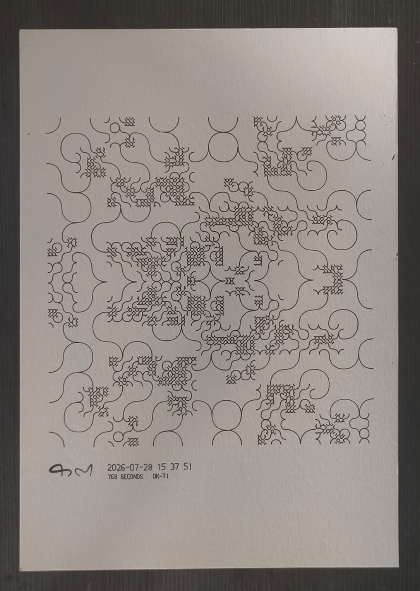

काल time · कला art
Every second has one drawing, and only one. Give the machine a moment and it draws that moment's kolam — in one continuous line, with a real pen, on paper. Nobody chooses the pattern. Time does.
Ujjwal Agarwal · orderofkala.org
01 The Work
There is a set of rules, and the rules are given a moment — a date, an hour, a minute, a second. From that moment alone they produce one drawing, and only ever that one. Ask the same rules for the same moment in ten years and you get the identical drawing, down to the last curve — which is why every sheet prints, at its foot, which version of the rules drew it. Anyone can check.
It is drawn, not printed. A mechanical pen moves across the paper at about the speed a hand would move, laying one continuous line. A sheet takes it somewhere between five minutes and half an hour, and you can stand and watch the whole thing happen.

02 The Kolam
Every morning across south India a woman draws a kolam at the threshold of her house: a lattice of dots, and a single unbroken line looped around them, never crossing one. It is made of rice flour. It is walked over, eaten by ants and birds, rained away — and drawn again tomorrow, different, from the same simple rules.
Nothing about it is scarce: not the patterns, which are endless; not the flour, which is given freely; not the welcome. Only the minutes it takes a hand to draw one.
So this is not a strange new thing a machine is doing. It is what the hand has always done — and the only change is who holds the rules.
03 What Time Decides
Each unit of time governs one quality of the drawing. So moments near each other come out looking like family — a resemblance a visitor can see across a wall without being told it is there.
Over that vocabulary sit a handful of settings: how many dots to a side, how the field folds, how heavily the ink is laid, how far the line may recurse into itself. That is the whole machine. It is a small machine, and the range it covers is not.
Which of those settings a given second is handed — which fold, how many dots, how heavy — is the law, and the law is the part I have not finished designing. It is written down and it runs; every plate in this document came out of it, and every plate prints on its own foot which version drew it. But the choosing is still open, and I would rather show you the range and say so than dress up a decision I have not made.
You can turn this yourself
The instrument is below, running in this page — the same law and the same planner the pen obeys, with the knobs taken off. Name a second and it draws that second's plate: the kolam, the mark, the moment written at the foot. Or start the clock and watch a new drawing collapse every second, each one bending out of the last.
It is fixed at one edition — A5, a 0.1 mm nib — the edition the arithmetic is quoted in, so the prices it gives you are the prices in this document. The full instrument, with paper, nib and a whole day laid out side by side, is at orderofkala.org.
The moment
04 The Room
The pen runs for the length of the show. A visitor asks it for a moment — the second they walked in, the morning a daughter was born, the afternoon someone died — and stands there while it is drawn. The wait is not a delay. The wait is the work: they are watching the exact minutes they are paying for being spent in front of them.
Then they take it home. Every sheet that leaves is replaced by the next one, so the show is larger on its last day than on its first, and the wall is a record of what the run actually spent.
It runs on your side. I supply the machine, the pens, the paper, the spares and a one-page procedure — it needs one person to start a drawing and change a sheet, and nothing more. If the pen is ever idle, nothing looks broken: the wall of what it has already drawn is the work too.
05 The Arithmetic
A drawing that takes the pen 387 seconds costs ₹387. On A5 with a 0.1 mm nib, 26 July 2026 at noon came to exactly that; the same date at midnight came to ₹1,132, because the dark hours run heavy and take longer to lay down. The price is not set by me. It is set by the length of the line, and anyone with the instrument can recompute it.
Both of those numbers came out of the instrument in 03. Type the date, set the hour to midnight and then to noon, and it will hand them back — not an estimate of them, them.
Which means there is nothing to negotiate, nothing to explain and nothing to defend. The most common question a gallery gets — why does it cost that? — has a one-line answer a visitor can check against a clock.
Nothing is made in advance. There is no unsold work at the end of this show — there cannot be. Nothing exists until someone asks for it.
Nothing is printed, framed or editioned on spec. So there is nothing to fund up front, nothing to insure, nothing to crate home and nothing to discount in October. If nobody asks, nothing was spent. And at a few hundred rupees a sheet, the barrier for a visitor is not money — it is only whether they want that particular second. Most people who buy one will be buying art for the first time in their lives.
06 The Ask
This is not a solution to anything. It is a question I built so that I could stand inside it — and now I would like other people to be able to stand inside it too.